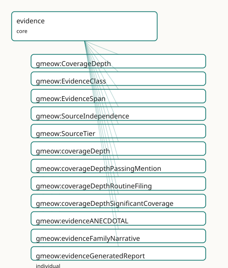

GMEOW Evidence Module
- IRI: https://blackcatinformatics.ca/gmeow/slices/evidence
- Tier: core
Group: core
What This Slice Covers
This slice owns 35 terms and contributes 4 mapping or projection rows. Use it when its terms match the native fact you want to preserve; use the linkage tables to see how those facts leave GMEOW for consumer vocabularies.
Dependencies
Consumers
- The claim spine's
EvidenceSpan; evidential warrant for citations and deception analyses.
Local Map

Examples
Notability Assessment
- Source:
slices/core/evidence/examples/notability-assessment.ttl - GMEOW terms:
gmeow:CitationAct,gmeow:CreativeWork,gmeow:Organization,gmeow:citationIntent,gmeow:citedEntity,gmeow:citingEntity,gmeow:coverageDepth,gmeow:coverageDepthRoutineFiling,gmeow:coverageDepthSignificantCoverage,gmeow:evidenceIndependentTradePress
# SPDX-FileCopyrightText: 2026 Blackcat Informatics® Inc. <paudley@blackcatinformatics.ca>
# SPDX-License-Identifier: CC-BY-4.0
#
# Worked example: grading citations as evidence . The evidence slice hangs
# quality dimensions on a gmeow:CitationAct (from the citations slice): its
# gmeow:hasEvidenceClass, gmeow:sourceTier (primary/secondary/tertiary),
# gmeow:sourceIndependence and gmeow:coverageDepth together decide whether the
# citation gmeow:supportsNotability. The Wikipedia-notability discrimination falls
# straight out: independent + secondary + significant coverage SUPPORTS it; a
# routine self-originated passing mention does NOT — same predicate, graded.
@prefix gmeow: <https://blackcatinformatics.ca/gmeow/> .
@prefix ex: <https://blackcatinformatics.ca/gmeow/examples/evidence/> .
ex:subject a gmeow:Organization ; gmeow:name "Acme Robotics Inc."@en .
ex:feature a gmeow:CreativeWork ; gmeow:title "Acme Robotics: the rise of a warehouse-automation contender"@en .
ex:pressRelease a gmeow:CreativeWork ; gmeow:title "Acme Robotics announces Series B"@en .
# --- Strong evidence: an independent trade-press feature with depth → supports.
# The subject (citingEntity, generic Entity) is supported by the cited work
# (citedEntity, a CreativeWork): gmeow:intentSupports reads "the cited work
# supports the citing entity", and the evidence dimensions grade that support.
ex:goodCite a gmeow:CitationAct ;
gmeow:citingEntity ex:subject ;
gmeow:citedEntity ex:feature ;
gmeow:citationIntent gmeow:intentSupports ;
gmeow:hasEvidenceClass gmeow:evidenceIndependentTradePress ;
gmeow:sourceTier gmeow:sourceTierSecondary ;
gmeow:sourceIndependence gmeow:sourceIndependenceIndependent ;
gmeow:coverageDepth gmeow:coverageDepthSignificantCoverage ;
gmeow:supportsNotability true .
# --- Weak evidence: the subject's own press release, a passing routine notice →
# same predicate, graded the other way: does NOT support notability.
ex:weakCite a gmeow:CitationAct ;
gmeow:citingEntity ex:subject ;
gmeow:citedEntity ex:pressRelease ;
gmeow:citationIntent gmeow:intentSupports ;
gmeow:hasEvidenceClass gmeow:evidenceSelfControlledSite ;
gmeow:sourceTier gmeow:sourceTierPrimary ;
gmeow:sourceIndependence gmeow:sourceIndependenceSelfOrIssuerOriginated ;
gmeow:coverageDepth gmeow:coverageDepthRoutineFiling ;
gmeow:supportsNotability false .
Terms
Classes
| Term | Label | Definition |
|---|---|---|
gmeow:CoverageDepth |
Coverage Depth | The depth of coverage a source provides about its subject — a value vocabulary (individuals, never subclasses). Distinguishes significant in-depth treatment fr... |
gmeow:EvidenceClass |
Evidence Class | The kind and strength of evidence supporting a claim — a value vocabulary (individuals, never subclasses). Distinguishes verified facts from self-assertions, a... |
gmeow:EvidenceSpan |
Evidence Span | An anchored target span within a resource — a text quote, character position, fragment identifier, page, or generic locator. Generalized from the citation-sele... |
gmeow:SourceIndependence |
Source Independence | The independence of a source from the subject it covers — a value vocabulary (individuals, never subclasses). Distinguishes sources that are editorially indepe... |
gmeow:SourceTier |
Source Tier | The bibliographic tier of a source — primary, secondary, or tertiary — a value vocabulary (individuals, never subclasses). This is the standard source-tier axi... |
Properties
| Term | Label | Definition |
|---|---|---|
gmeow:coverageDepth |
coverage depth | The depth of coverage the source provides about the subject of a citation — significant coverage, passing mention, or routine filing. Non-functional: competing... |
gmeow:hasEvidenceClass |
has evidence class | The evidential warrant of a citation — the kind and strength of evidence it provides for the claim it supports. Non-functional: a single citation may carry mul... |
gmeow:sourceIndependence |
source independence | The independence status of the source referenced by a citation — independent or self/issuer originated. Non-functional: competing assessments by different stan... |
gmeow:sourceTier |
source tier | The bibliographic tier of the source referenced by a citation — primary, secondary, or tertiary. Non-functional: competing tier assessments coexist (Principle... |
gmeow:supportsNotability |
supports notability | Whether this citation is asserted to support notability (encyclopedic significance) as distinct from factual verification. A citation may verify a fact (high e... |
Individuals
| Term | Label | Definition |
|---|---|---|
gmeow:coverageDepthPassingMention |
passing mention | The source mentions the subject only in passing — a name in a list, a brief reference, or an incidental citation — without substantive discussion. |
gmeow:coverageDepthRoutineFiling |
routine filing | The source is a routine administrative filing, automated entry, or bulk-generated record that mentions the subject only as a matter of standard procedure. |
gmeow:coverageDepthSignificantCoverage |
significant coverage | The source provides substantial, in-depth treatment of the subject — multiple paragraphs, a dedicated article, or a detailed profile — rather than a trivial me... |
gmeow:evidenceANECDOTAL |
anecdotal evidence | Evidence based on personal accounts, informal narratives, or uncorroborated reports — stronger than rumour but weaker than verified fact. |
gmeow:evidenceFamilyNarrative |
family narrative evidence | Evidence from oral history, family tradition, or genealogical narrative passed between relatives. |
gmeow:evidenceGeneratedReport |
generated report evidence | Evidence from a machine-generated report, dashboard output, or automated analytics summary. |
gmeow:evidenceIndependentTradePress |
independent trade press evidence | Evidence from a trade or industry publication that is editorially independent of the subject. |
gmeow:evidenceLegalFiling |
legal filing evidence | Evidence from a court filing, patent application, regulatory submission, or other legal document filed with a governmental or judicial body. |
gmeow:evidenceNewspaperLead |
newspaper lead evidence | Evidence from a newspaper article, wire-service dispatch, or journalistic lead — distinct from independent trade press in audience and editorial process. |
gmeow:evidenceOcrExtract |
OCR extract evidence | Evidence extracted from an image or scan by optical character recognition — the extraction step itself is part of the provenance. |
gmeow:evidenceOfficialSource |
official source evidence | Evidence from an authoritative governmental, intergovernmental, or standards-body source. |
gmeow:evidencePrivateCorrespondence |
private correspondence evidence | Evidence from a letter, email, message, or other direct communication not intended for public distribution. |
gmeow:evidencePrivateScan |
private scan evidence | Evidence from a privately held document scan, photograph, or digitisation not publicly accessible or independently verifiable. |
gmeow:evidencePublicRegistry |
public registry evidence | Evidence drawn from a publicly accessible register, database, or gazette maintained by an authority. |
gmeow:evidenceRUMOR |
rumour evidence | Evidence whose provenance is unverified, unverifiable, or explicitly speculative — the weakest warrant tier, recorded for audit completeness but not for factua... |
gmeow:evidenceRawArchive |
raw archive evidence | Evidence from an unprocessed archival holding — a box, folder, or collection entry before scholarly curation or transcription. |
gmeow:evidenceSELF |
self evidence | Evidence originating from the subject of the claim itself — a self-assertion, self-published biography, or press release. High authority for the subject's own... |
gmeow:evidenceSelfControlledSite |
self-controlled site evidence | Evidence from a website, social-media account, or platform profile controlled by the subject of the claim. |
gmeow:evidenceSourceCodeArchive |
source code archive evidence | Evidence from a version-controlled software repository, release tarball, or code snapshot. |
gmeow:evidenceVERIFIED |
verified evidence | Evidence that has been independently checked or corroborated by a trusted authority or process. |
gmeow:sourceIndependenceIndependent |
independent | The source is editorially and financially independent of the subject — no employment, ownership, or promotional relationship. |
gmeow:sourceIndependenceSelfOrIssuerOriginated |
self or issuer originated | The source originates from the subject itself or from an issuer, promoter, or affiliated party — press releases, self-published sites, corporate filings by the... |
gmeow:sourceTierPrimary |
primary | A primary source — an original document, artifact, or direct record created at the time of the event or by the subject (a birth certificate, a legal filing, a... |
gmeow:sourceTierSecondary |
secondary | A secondary source — an analysis, commentary, review, or synthesis by an independent party that interprets or builds upon primary sources (a biography, a trade... |
gmeow:sourceTierTertiary |
tertiary | A tertiary source — a compendium, index, encyclopedia, or database that aggregates and summarizes secondary sources without adding original analysis. |
Linkages
- Rows: 4
- Projection profiles: -
- External vocabularies:
crminf,prov,schema
| Source | Kind | Profile | Predicate/Relation | Target | Evidence |
|---|---|---|---|---|---|
gmeow:EvidenceClass |
equivalence | - |
skos:closeMatch | crminf:I2_Belief | gmeow-evidence.sssom.tsv; gmeow:eqEvidence001; confidence 0.75 |
gmeow:hasEvidenceClass |
equivalence | - |
skos:relatedMatch | crminf:J5_holds_to_be | gmeow-evidence.sssom.tsv; gmeow:eqEvidence002; confidence 0.6 |
gmeow:hasEvidenceClass |
equivalence | - |
skos:relatedMatch | prov:wasDerivedFrom | gmeow-evidence.sssom.tsv; gmeow:eqEvidence005; confidence 0.5 |
gmeow:hasEvidenceClass |
equivalence | - |
skos:relatedMatch | schema:isBasedOn | gmeow-evidence.sssom.tsv; gmeow:eqEvidence007; confidence 0.6 |
Guide
Evidence — warrant and notability, two axes that never bridge
Slice:
https://blackcatinformatics.ca/gmeow/slices/evidence· tier: core The evidential substrate of the citation link: how strong the evidence is, and — separately — whether it makes anything notable.
No SOTA vocabulary unifies evidential warrant with source-independence typing
(Principle 1), so GMEOW does, as two orthogonal axes that travel with the evidence
link (CitationAct / EvidenceSpan), never with the asserted fact. Axis A —
evidential warrant: the kind and strength of evidence for a claim, an open value
vocabulary (EvidenceClass) reached non-functionally — a multi-source claim legitimately
carries several evidence classes at once (Principle 9). Axis B — source independence
and coverage typing: four facets on the citation that feed notability assessment, not
truth. The axes are explicitly orthogonal: a primary legal filing may verify a fact
beyond doubt (high warrant) while establishing no notability at all
(supportsNotability false). Bridged by reference to CRMinf, PROV-O, schema.org, C2PA,
DataCite, nanopublications, and WP:GNG (Principle 5).
On the claim spine (Source → Chunk → EvidenceSpan → Claim, Principle 14) this slice owns
the EvidenceSpan anchor — the link from a claim back into the exact span of
its source — and the warrant facets that ride on each citation edge. Weak evidence is
recorded, never deleted: rumour-tier claims are suppressed by projection (Principle 10),
and every eligibility decision is the solver's, not the reasoner's (Principle 12).
The spine anchor
gmeow:EvidenceSpan
An anchored target span within a resource — text quote, character position, fragment
identifier, page, or generic locator. Generalised from the citation-selector model to
serve both evidentiary claims and annotation targets (the
citations slice's Selector specialises it, the notes slice's annotation targets reuse
it, and no second selector model is ever minted (Principle 4). Re-homed to core in the
dependency surgery because the spine anchor is core evidence machinery.
Axis A — evidential warrant
gmeow:EvidenceClass
The kind and strength of evidence supporting a claim — a value vocabulary (individuals,
never subclasses), and open: a new evidence kind is data, not a schema change. Coarse
tiers (evidenceVERIFIED, evidenceSELF, evidenceANECDOTAL, evidenceRUMOR) coexist
with fine refinements (legal filing, public registry, independent trade press, OCR
extract, family narrative, source-code archive, private correspondence…). Note the
Principle 9 inflection in evidenceSELF: self-assertion is top authority for the
subject's own standpoint while remaining low warrant for third-party verification —
two different questions, both answered honestly.
gmeow:hasEvidenceClass
The warrant facet on a CitationAct. Non-functional by doctrine: one citation may be
both a legal filing and the trade-press coverage of that filing, and competing
classifications coexist rather than collapse (Principle 9).
Axis B — independence & coverage (the notability axis)
gmeow:sourceIndependence
Whether the cited source is editorially and financially independent of its subject, or
self/issuer-originated (press releases, self-published sites, the subject's own
filings). Range is the SourceIndependence value vocabulary. About notability
eligibility, never factual truth — competing assessments from different standpoints
coexist (Principle 9).
gmeow:sourceTier
The standard bibliographic tier — sourceTierPrimary / sourceTierSecondary /
sourceTierTertiary (SourceTier vocabulary, cf. WP:GNG). A value vocabulary naming an
evidentiary reality, not a selector privileging one co-equal claim. Non-functional:
tier assessments are themselves contestable.
gmeow:coverageDepth
How deeply the source treats the subject — coverageDepthSignificantCoverage,
coverageDepthPassingMention, or coverageDepthRoutineFiling (CoverageDepth
vocabulary). Orthogonal to tier and independence: a secondary independent source can
still mention the subject only in a list.
gmeow:supportsNotability
The explicit boolean assertion that this citation is offered as notability support, as distinct from factual verification. The keystone of the two-axis doctrine: warrant and notability never bridge automatically — a citation must be claimed as notability evidence, and competing notability assessments coexist (Principle 9).
Open-world policy & solver boundary
No existential restrictions are asserted on CitationAct: every facet here is an
optional annotation on the evidence link, with closed-world enforcement left to SHACL at
instance-validation time (Principles 7–8). And the question the axes exist to answer —
"is this subject notable?", "is this claim adequately evidenced?" — is never answered
in OWL: eligibility folds over independence × tier × depth × warrant are projection-time
solver policy (Principle 12). The graph records the facets; the consumer's policy decides.
Dependencies
Depends on citations (the CitationAct the facets attach to) and kernel. Consumed by
the claim spine's EvidenceSpan, citation warrant in every sourced slice, and
the deception analyses' evidence grading.